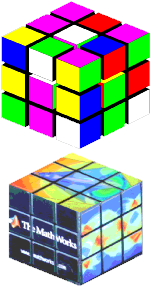
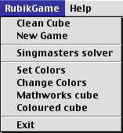
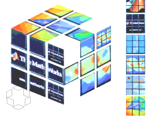
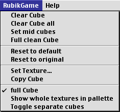

version 1.0 - August 2007
This document tells something about "Rubik", a set of Matlab routines to show, manipulate, and help solve a Rubik Cube
The code is started from the Rubik Cube Game by Sergiy Iglin. The code has been changed, but most the functionality which was available there hasn't really changed. That means that much credit has to go to him.

Many possibilities started for using "command window based", but changed to grafical user interface usage.
With thanks to the Sergiy Iglin for giving me a quickstart.
Everything that can be done via GUI's, can be done via the command line. And a bit more can be done via the command line than via GUI's. But, since all "normal use" can be done via GUI's, everything is not explained here.
Rubik('bFullCube',true) (the same can be done with (Rubik('bful',1)) makes a cube where the orientatation of the mid cubes are important. The small cubes are automatically split from each other, so that it's possible to look between the cubes. The mid cubes of the "full-cube" have coloured side faces. A correct cube has the mid cubes oriented so that the side faces have the same colours as the mid cube faces with the same orientation.
Rubik('dOffset',0.3) forces mid cubes that are separated. The number given is the distance between the cubes. The width of the small cubes is 2.
Another interesting use of the functions via the command line is requesting for cubes, and letting a solution calculated. This can be used for example for having some statistical information about the number of needed steps for solutions.
Different possibilities:
Direct creation of a "Mathworks-cube" (cube with "textures" of Mathworks drawings/logos):
Rubik Mathworks : if a Rubik axes exist, the cube of that axes is changed to a "Mathworks-cube", if not, a new figure is created.

As written above, it's possible to make cubes with any texture (image) on different faces of the cube. All images have to be made in indexed colour mode.
In this set of files, the textures of a "Mathworks cube" is added. The images are not good images, and the alignment is far from correct. But it worked for what I wanted to do, so I was happy with it.
Another weak point of the code here doesn't have the nice animation that is available with the simply coloured faces. The main reason why this wasn't added is speed. With my computer, and the Matlab version I have (Matlab 5.2 on Mac), it was very slow, already without animation. Therefore I removed animation if a texture is selected. I thought to add a "wireframe-animation", but I didn't.

There are two (UI-)ways to start this possibility. You can choose Set Colors from the menu. Then you start with a cube where the mid cubes are still filled, but for the rest the cube is cleared. You can also start by "Change Colors". Then you start with the cube as you have in the Rubik window.
In the "Set colours" window, it's possible to setup a cube, for example copy the colors (or pictures) of a real cube to a "virtual cube", to solve it.
There are three regions in this window. The top left (the biggest part of the window) is the cube. The right part is called that palette. From there colours can be chosen to put on the cube. A small cube on the bottom left shows the colours of the mid cubes. It can also be used to put a colour on a mid cube. In texture mode, this cube only shows that the mid cube has a color (texture) or not.
It's best that the mid cubes are set first. As long a they are not known, it's not possible to know what kind of cubes exist, so that there can't be any help for automatically setting colours
If the mid cube, it's for example only necessary to give two colours for a corner cube, since there is only one possible choice for the third face.
Setting up the cube is done by first selecting a colour, by clicking on the right square of the palette. The pointer is changed to a cross. Then, you can click on a face of the cube to set that face to the previously selected colour. Clicking on one of the small faces on the small cubes, colours the mid cube face. This is added to easily set up the cube, since the arrangement of those six faces define the full cube (in solved state). After "colouring" a face, normally you go back to the default state.
It's also possible to hold the state. This is done by "shift clicking" the colour.

If the colours of the palette don't match with your cube, the colours can be changed. This is done by "alt-click" on the colour of the palette that you want to change. You get a colour-setting window to set that colour.
Here it can be useful to distinguish between two "colourings". You have the set of six colours, shown in the palette. And you have the colours of the cube. The last is implemented as an index to the palette-colours. That means that you could give two faces the same colour. The faces on the cube will be indistinguishable.
If you are in texture mode, the texture can be rotated by double clicking it on the palette.
Correcting some colours on the cube can be done by alt-click on a face that you want to change. This is only possible if no colour is selected. By this alt-click, the full small cube is cleared. This is done because otherwise it could be possible that the face is recoloured by the automatic colouring feature (which can't be disabled).
Some impossible colourings are detected (like giving a small cube colours that are on the back of each other, giving two small cubes the same colour).
Remark
The colours have to be in a right order. This is done to make some checks easier. You have three sets of colours, where each set is a pair of two colours that are on the back side of each other. The standard order of the colours is, from top to bottom on the palette (also numbers one to six internally), giving the colours on the back, front, left, right, bottom and top of the cube. If the mid cubes are set in an order that doesn't match this order (the cube can not be rotated so that the colours are on the given faces), then the colours are reordered.
The cube can be rotated like in the Rubik-window, by clicking on faces of the edge cubes. It's not possible to rotate a layer. This window is only made for setting up a cube from scratch.
In "full cube" mode (where the orientation of the mid cubes is important), clikking on the mid cube faces let it rotate in clockwise direction.Below a list of actions possible with the mouse is summarized.
When a colour (or texture) is selected, some functionality is not possible:
The texture palette (right hand squares) show the textures in the following order : (from top to bottom) back, front, left, right, bottom, top. The first four (that have "a real bottom and top") have a logical orientation. Top is top and bottom is bottom, as shown in "the base orientation". The top and bottom surface are oriented so that if you rotate the cube by the left-right axes, so that the surface is put to the front surface, the top of the surface on the palette is the top on the cube.
The solver is called "Singmaster's Step by Step solution", since most of it came was extracted from the book "kanttekeningen bij de KUBUS van RUBIK" by David Singmaster (in Dutch). Apparently, the method presented there is the same as that was found on the website from Mark Jeays, http://jeays.net/rubiks.htm, solution 1. In another submission on Matlab Central, this same method is given to be his method. I didn't do any investigation on who's method it is.
When I started, I thought of comparing some different methods, therefore I didn't call the solver just 'solver', but SSSsolver. I didn't come to implementing other methods.
I've added some code to make it a bit better (I hope), for example by trying choosing the best face to start with. I also added a first "brute-force" method, for the case the cube can be solved by a couple of twists.
A last addition was to solve cubes that need the mid cubes to be rotated correctly ("full cubes"). This method was "rented" from Mark Jeays.
The solver is made for "solvable cubes". Not all possibilities can be solved. If a cube is made by rotations of layers, the cube will be solved. But if the cube is made by setting the colours of the faces, a solution is not always found. The program will not crash, but will also not "realise" that it's not solving the cube. The result will just be wrong!!!
The solver can be called by the menu. In that case an animation during solving is shown, at least in the case of colours, not in "texture mode". Using the command line (or in another function), the animation can be requested or not.
During solving the cube (in coloured mode), animation is used. Since after solving the cube, the solution is optimised (in a simple way), the solution presented during the first solving phase needs a bit more turns than the solution that is presented afterwards.
A lot of improvements to the solver can be done towards the number of necessary turns, as well as the calculation. For example the code uses the function CheckCube, where different things are done to "look" at the cube. Not everything is needed all the time.
After finding the solution, the solution is transfered to the original window. There the solution can be seen, step-by-step. The next and previous steps are given in the title. Depending on the mode (colour or texture), this is giving the colour of the face that has to be rotated, or the position (front, ...). The number behind the colour (or position) is 1 for clockwise (looking to the face), -1 for counter clockwise and 2 for 180°.
The following keys can be used for stepping through the solution:
Some issues about this program that are not really nice, or even wrong, are known. But I didn't find the energy to do anything about it.